The separation property (4.29) applies, in particular, to
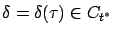
, the terminal state perturbation vector corresponding to a temporal perturbation of the control. We know from (4.9) and (4.7) that this vector is given by
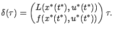
Since
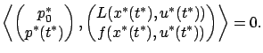
By virtue of (4.8), this is equivalent to
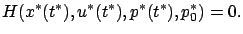
In other words,
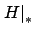
equals 0 at the terminal time.4.4 We need to prove that it is 0 everywhere.Let us show that
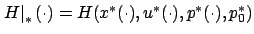
is a continuous function of time, even though the optimal control![[*]](crossref.gif) . Let
. Let 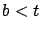
and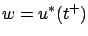
and making
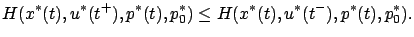
Similarly, applying (4.35) with
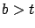
and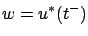
, in the limit as
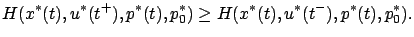
Thus the two quantities must actually be equal, and the continuity claim is established.
Next, let us show that the function is constant. In Section 3.4.4, in the context of the variational approach, we established this property by simply differentiating the Hamiltonian with respect to time, but here we need to be more careful because the existence of
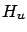
has not been assumed. In view of the Hamiltonian maximization condition, we can write
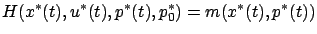
where
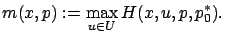
We just saw that
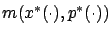
is a continuous function of time. For an arbitrary pair of times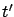
, we have the inequalities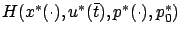
is continuously differentiable for each fixed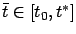
, with an upper bound on the magnitude of its derivative independent of). We can now study its derivative.
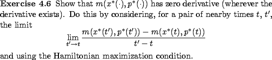
We have shown that the function
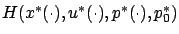
equals 0 at